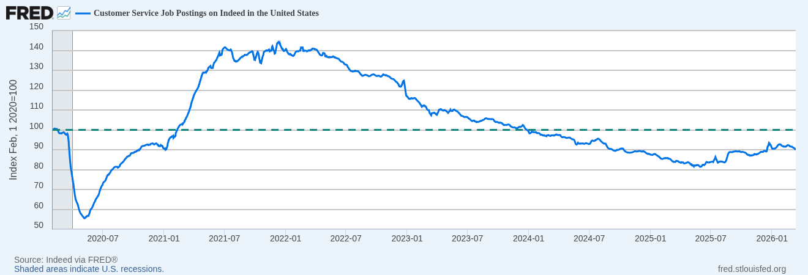
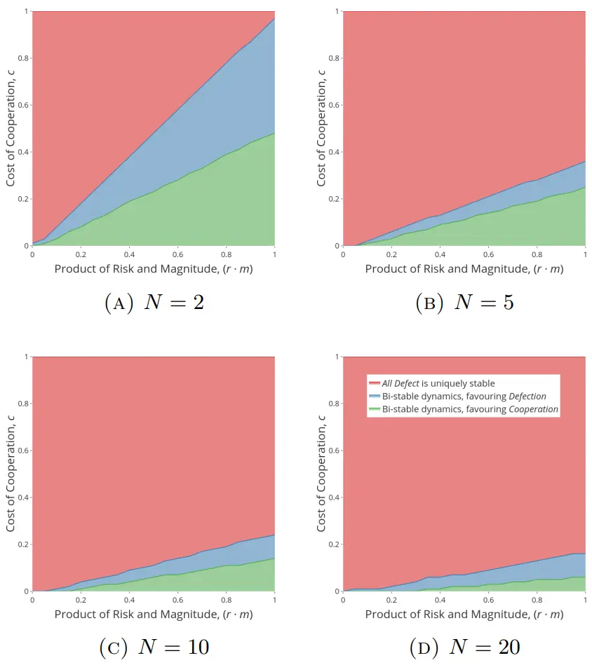
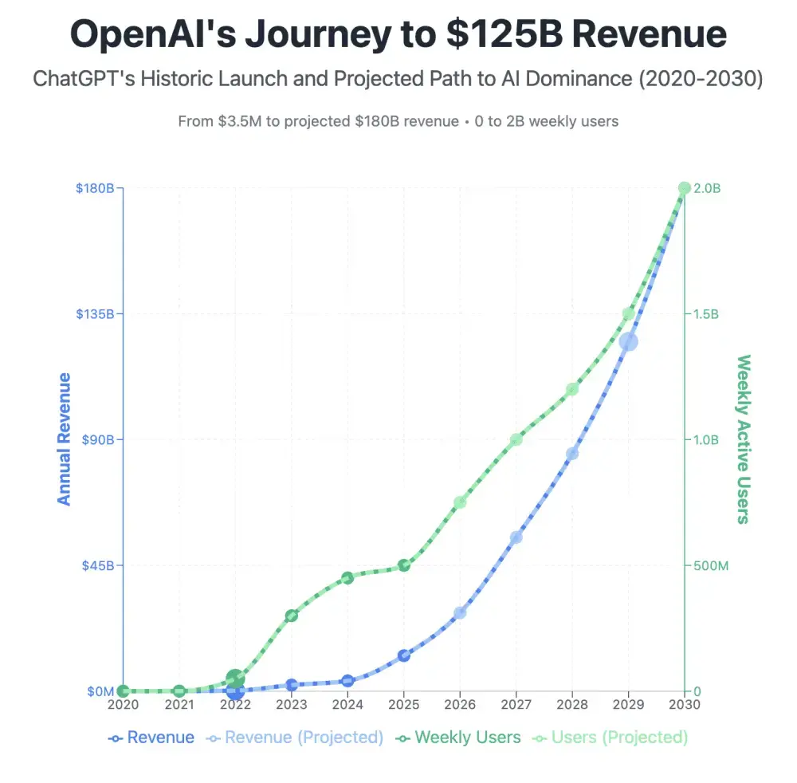
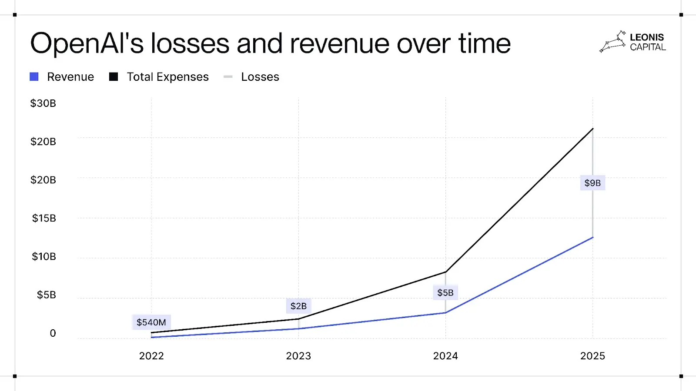
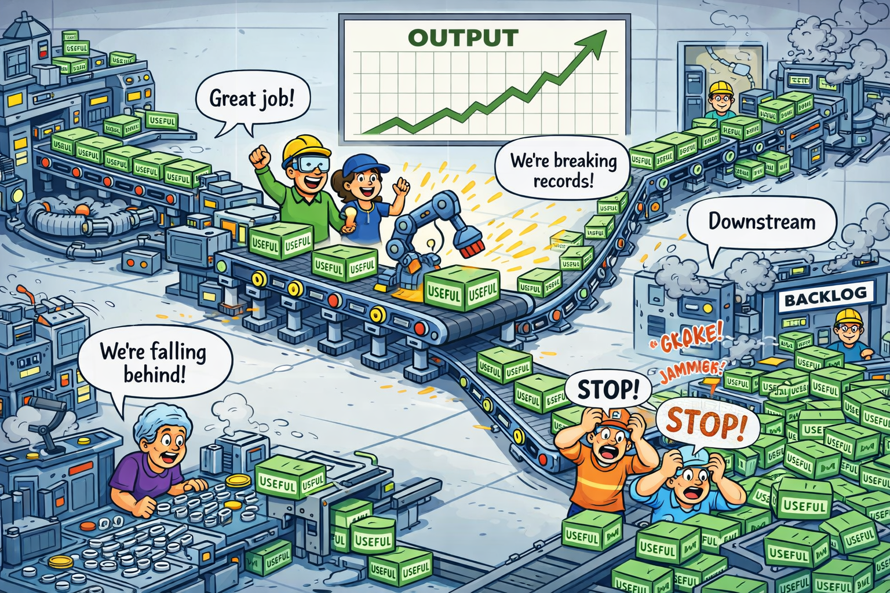
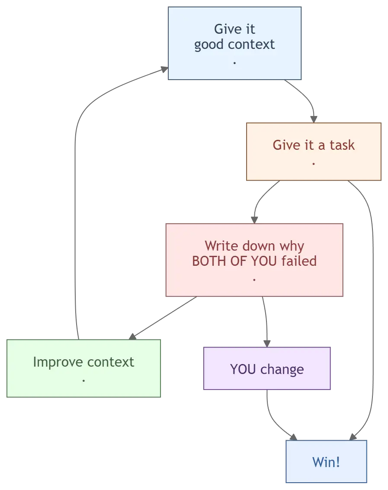

<!DOCTYPE html>
<html lang="en">
  <head>
    <meta charset="utf-8" />
    <meta name="viewport" content="width=device-width, initial-scale=1.0, maximum-scale=1.0, user-scalable=no" />

    <title></title>
    <link rel="stylesheet" href="dist/reveal.css" />
    <link rel="stylesheet" href="css/inter-clean.css" id="theme" />
    <link rel="stylesheet" href="plugin/highlight/zenburn.css" />
	<link rel="stylesheet" href="css/layout.css" />
	<link rel="stylesheet" href="plugin/customcontrols/style.css">


    <script defer src="dist/fontawesome/all.min.js"></script>

	<script type="text/javascript">
		var forgetPop = true;
		function onPopState(event) {
			if(forgetPop){
				forgetPop = false;
			} else {
				parent.postMessage(event.target.location.href, "app://obsidian.md");
			}
        }
		window.onpopstate = onPopState;
		window.onmessage = event => {
			if(event.data == "reload"){
				window.document.location.reload();
			}
			forgetPop = true;
		}

		function fitElements(){
			const itemsToFit = document.getElementsByClassName('fitText');
			for (const item in itemsToFit) {
				if (Object.hasOwnProperty.call(itemsToFit, item)) {
					var element = itemsToFit[item];
					fitElement(element,1, 1000);
					element.classList.remove('fitText');
				}
			}
		}

		function fitElement(element, start, end){

			let size = (end + start) / 2;
			element.style.fontSize = `${size}px`;

			if(Math.abs(start - end) < 1){
				while(element.scrollHeight > element.offsetHeight){
					size--;
					element.style.fontSize = `${size}px`;
				}
				return;
			}

			if(element.scrollHeight > element.offsetHeight){
				fitElement(element, start, size);
			} else {
				fitElement(element, size, end);
			}		
		}


		document.onreadystatechange = () => {
			fitElements();
			if (document.readyState === 'complete') {
				if (window.location.href.indexOf("?export") != -1){
					parent.postMessage(event.target.location.href, "app://obsidian.md");
				}
				if (window.location.href.indexOf("print-pdf") != -1){
					let stateCheck = setInterval(() => {
						clearInterval(stateCheck);
						window.print();
					}, 250);
				}
			}
	};


        </script>
  </head>
  <body>
    <div class="reveal">
      <div class="slides"><section  data-markdown><script type="text/template"><!-- .slide: class="drop" -->
<div class="" style="position: absolute; left: 0px; top: 0px; height: 700px; width: 960px; min-height: 700px; display: flex; flex-direction: column; align-items: center; justify-content: center" absolute="true">

<style>

@import url('https://fonts.googleapis.com/css2?family=Inter:wght@400;500;600;700;800&family=Lora:wght@400;500;600&display=swap');

.reveal {
  --r-background-color: #ffffff;
  --r-main-color: #111111;
  --r-heading-color: #111111;

  background: #ffffff !important;
  color: #111111 !important;

  font-family: 'Inter', -apple-system, BlinkMacSystemFont, 'Segoe UI', sans-serif !important;
  font-feature-settings: "liga" 1, "kern" 1, "calt" 1;
  text-rendering: geometricPrecision;
}

.reveal .slides,
.reveal .slides section,
.reveal .slide-background,
.reveal .slide-background-content,
.reveal .backgrounds,
.reveal .backgrounds .slide-background,
.reveal .reveal-viewport {
  background: #ffffff !important;
  background-color: #ffffff !important;
}

.reveal .slides {
  font-size: 1.6em;
}

.reveal section {
  width: 100%;
  height: 100%;
  padding: 0.5em 0.75em;
  box-sizing: border-box;
}

.reveal h1 { font-size: 3.5em; line-height: 0.95; letter-spacing: -0.04em; font-weight: 800; }
.reveal h2 { font-size: 2.6em; line-height: 1.0; letter-spacing: -0.03em; font-weight: 700; }
.reveal h3 { font-size: 2.0em; line-height: 1.1; letter-spacing: -0.02em; font-weight: 600; }
.reveal p, .reveal li { font-size: 1.4em; line-height: 1.5; }

/* Prevent font-size compounding on nested lists */
.reveal li li { font-size: 1em; }

.reveal ul,
.reveal ol {
  text-align: left;
  margin-left: 1.2em;
}

/* Emphasis - different font, not italic slant */
.reveal em,
.reveal i {
  font-family: 'Lora', Georgia, serif !important;
  font-style: normal !important;
  font-weight: inherit !important;
  color: #8b8b8b !important;
}

/* Highlighted text - intentional yellow, properly shaped */
.reveal mark {
  background: #ffe04b;
  color: #111111 !important;
  padding: 0.05em 0.2em;
  border-radius: 4px;
  -webkit-box-decoration-break: clone;
  box-decoration-break: clone;
}

/* em inside a highlight: restore dark so it's legible, not gray-on-yellow */
.reveal mark em,
.reveal em mark,
.reveal mark i,
.reveal i mark {
  color: #111111 !important;
}

.reveal img,
.reveal video,
.reveal iframe {
  max-width: 78%;
  max-height: 72vh;
  width: auto;
  height: auto;
  object-fit: contain;
}

.reveal .r-stretch {
  max-width: 78% !important;
  max-height: 72vh !important;
}

.reveal table {
  border-collapse: collapse;
  margin: 0 auto;
}

.reveal table th,
.reveal table td {
  padding: 0.6em 1.2em;
  text-align: center;
  vertical-align: middle;
  border: none;
}

.reveal table th {
  font-weight: 700;
}

.reveal table td {
  font-size: 0.95em;
  border: 2px solid #111111;
}

.reveal .center,
.reveal .slide-background-content {
  display: flex;
  align-items: center;
  justify-content: center;
}
</style>
## What does AI actually do to your organisation?

</div></script></section><section ><section data-markdown><script type="text/template"><!-- .slide: class="drop" -->
<div class="" style="position: absolute; left: 0px; top: 0px; height: 700px; width: 960px; min-height: 700px; display: flex; flex-direction: column; align-items: center; justify-content: center" absolute="true">

# AI will change <mark>the shape</mark> of every single service job.
</div></script></section><section data-markdown><script type="text/template"><!-- .slide: class="drop" -->
<div class="" style="position: absolute; left: 0px; top: 0px; height: 700px; width: 960px; min-height: 700px; display: flex; flex-direction: column; align-items: center; justify-content: center" absolute="true">


<!-- Notes: Photo of Amit with a terrible blonde mullet. Argument: AI will make hairdressers (and most service workers) more technician-like again - less creative autonomy, more execution. The mullet is the joke; the point is that specialisation collapses under commoditisation. -->
</div></script></section></section><section  data-markdown><script type="text/template"><!-- .slide: class="drop" -->
<div class="" style="position: absolute; left: 0px; top: 0px; height: 700px; width: 960px; min-height: 700px; display: flex; flex-direction: column; align-items: center; justify-content: center" absolute="true">

## Today's agenda

|          | Camp                   | Question                      |
| -------- | ---------------------- | ----------------------------- |
| 🚫       | *Not using AI*         | Is abstaining even an option? |
| 🧑‍🤝‍🧑 | *Are we ready for AI?* | What do we need?              |
| 🤖       | *Is AI ready for us?*  | Does it even work?            |
| 💬       | *Discussion*           | What does this mean for us?   |
</div></script></section><section ><section data-markdown><script type="text/template"><!-- .slide: class="drop" -->
<div class="" style="position: absolute; left: 0px; top: 0px; height: 700px; width: 960px; min-height: 700px; display: flex; flex-direction: column; align-items: center; justify-content: center" absolute="true">

## _Should we use AI?_

### Hrm.. I'm leaning 'No'...
</div></script></section><section data-markdown><script type="text/template"><!-- .slide: class="drop" -->
<div class="" style="position: absolute; left: 0px; top: 0px; height: 700px; width: 960px; min-height: 700px; display: flex; flex-direction: column; align-items: center; justify-content: center" absolute="true">

### If people <mark>feel</mark> AI helps, they will want to use it
</div></script></section><section data-markdown><script type="text/template"><!-- .slide: class="drop" -->
<div class="" style="position: absolute; left: 0px; top: 0px; height: 700px; width: 960px; min-height: 700px; display: flex; flex-direction: column; align-items: center; justify-content: center" absolute="true">

## Ethical? 
### Society effects?

 - &shy;<!-- .element: class="fragment" data-fragment-index="1" -->Will jobs disappear?
	 - &shy;<!-- .element: class="fragment" data-fragment-index="2" -->Direct and cancelling stupid work
 - &shy;<!-- .element: class="fragment" data-fragment-index="3" -->Is democracy at risk?
- &shy;<!-- .element: class="fragment" data-fragment-index="4" -->✔️,✔️ and we're probably screwed
</div></script></section><section data-markdown><script type="text/template"><!-- .slide: class="drop" -->
<div class="" style="position: absolute; left: 0px; top: 0px; height: 700px; width: 960px; min-height: 700px; display: flex; flex-direction: column; align-items: center; justify-content: center" absolute="true">

## Abstain on moral grounds?

- &shy;<!-- .element: class="fragment" data-fragment-index="1" -->Option 1: Work/volunteer for the solution
- &shy;<!-- .element: class="fragment" data-fragment-index="2" -->Option 2: 


<!-- Notes: A person reading books by candlelight, sitting in a city that is fully electrified outside the window. Argument: choosing not to use the available technology doesn't make the technology go away - it just makes you the person reading by candlelight. Abstaining is a valid personal choice but it doesn't constitute a solution. -->
</div></script></section><section data-markdown><script type="text/template"><!-- .slide: class="drop" -->
<div class="" style="position: absolute; left: 0px; top: 0px; height: 700px; width: 960px; min-height: 700px; display: flex; flex-direction: column; align-items: center; justify-content: center" absolute="true">

## Does it even work?
 


<!-- Notes: Line chart showing that after an AI-driven hiring dip, companies are hiring humans again. Argument: the early panic about AI replacing all jobs hasn't materialised as predicted - the technology has real limitations and the labour market has adapted. Grounds the "does it even work?" scepticism in data. -->
</div></script></section><section data-markdown><script type="text/template"><!-- .slide: class="drop" -->
<div class="" style="position: absolute; left: 0px; top: 0px; height: 700px; width: 960px; min-height: 700px; display: flex; flex-direction: column; align-items: center; justify-content: center" absolute="true">


<!-- Notes: A man holding a map of Rome while standing in London. The map is useless - not because maps are bad, but because it's the wrong map for the territory. Argument: AI tools are only as useful as the context you give them. Using a general-purpose model on your specific organisation without grounding is like navigating London with a Roman street plan. -->
</div></script></section></section><section ><section data-markdown><script type="text/template"><!-- .slide: class="drop" -->
<div class="" style="position: absolute; left: 0px; top: 0px; height: 700px; width: 960px; min-height: 700px; display: flex; flex-direction: column; align-items: center; justify-content: center" absolute="true">

# Real AI risks
</div></script></section><section data-markdown><script type="text/template"><!-- .slide: class="drop" -->
<div class="" style="position: absolute; left: 0px; top: 0px; height: 700px; width: 960px; min-height: 700px; display: flex; flex-direction: column; align-items: center; justify-content: center" absolute="true">

### People want to bypass auth / text is insecure


>[...] a fractal number of attack surfaces open up
 
https://www.youtube.com/watch?v=w1s98GykzRI
<!-- Notes: Picture of Meredith Whittaker, president of Signal. Argument: the person who runs the most secure mainstream messaging platform is warning that text-based AI systems are insecure by design - every prompt is a potential attack surface, and connecting AI to internal systems multiplies that risk fractally. -->
</div></script></section><section data-markdown><script type="text/template"><!-- .slide: class="drop" -->
<div class="" style="position: absolute; left: 0px; top: 0px; height: 700px; width: 960px; min-height: 700px; display: flex; flex-direction: column; align-items: center; justify-content: center" absolute="true">

## Unset (unsettable?) regulations


<!-- Notes: Illustrates why top-level AI regulation is structurally very hard - the technology moves faster than legislative cycles and the parameters being regulated are not stable. References research showing the difficulty of specifying safe behaviour in complex systems. -->

https://arxiv.org/abs/2006.05203
</div></script></section><section data-markdown><script type="text/template"><!-- .slide: class="drop" -->
<div class="" style="position: absolute; left: 0px; top: 0px; height: 700px; width: 960px; min-height: 700px; display: flex; flex-direction: column; align-items: center; justify-content: center" absolute="true">

## Political / technical intersection


- Mythos... undocumented removal of '_production of radiological and nuclear weapons_' from threat model
<!-- Notes: Technical and political leadership talking about war - AI infrastructure decisions are now geopolitical decisions. The undocumented removal of 'production of radiological and nuclear weapons' from an AI threat model is the concrete example: the companies setting the rules are also the companies with the most to gain from loosening them. -->
</div></script></section><section data-markdown><script type="text/template"><!-- .slide: class="drop" -->
<div class="" style="position: absolute; left: 0px; top: 0px; height: 700px; width: 960px; min-height: 700px; display: flex; flex-direction: column; align-items: center; justify-content: center" absolute="true">

## Insecure monetization strategy

<split left="1" right="1" gap="1">


 


</split>
<!-- Notes: Left image: what OpenAI says their monetization strategy is (clean, subscription/API model). Right image: what their actual financial behaviour looks like (chaotic, investor-dependent, unclear path to profitability). Argument: the companies you are being asked to trust with your data don't have a stable, principled business model - which creates structural risk for organisations that become dependent on them. -->
</div></script></section></section><section ><section data-markdown><script type="text/template"><!-- .slide: class="drop" -->
<div class="" style="position: absolute; left: 0px; top: 0px; height: 700px; width: 960px; min-height: 700px; display: flex; flex-direction: column; align-items: center; justify-content: center" absolute="true">

## _Should we use AI?_

## Yes, I think so, but...

 Are my humans ready?
</div></script></section><section data-markdown><script type="text/template"><!-- .slide: class="drop" -->
<div class="" style="position: absolute; left: 0px; top: 0px; height: 700px; width: 960px; min-height: 700px; display: flex; flex-direction: column; align-items: center; justify-content: center" absolute="true">


<!-- Notes: I, Robot quote: "You have to ask the right question." Argument: the question 'should we use AI?' is the wrong question - it's already being used. The right question is 'given that this is happening, are our humans in a position to use it well?' Reframes the whole section. -->
</div></script></section><section data-markdown><script type="text/template"><!-- .slide: class="drop" -->
<div class="" style="position: absolute; left: 0px; top: 0px; height: 700px; width: 960px; min-height: 700px; display: flex; flex-direction: column; align-items: center; justify-content: center" absolute="true">

## Actually... how do your humans make decisions?


<!-- Notes: 'This is fine' meme - dog sitting calmly at a table drinking coffee while the room burns around him. Argument: most organisations already have humans making decisions in broken environments and calling it normal. AI doesn't fix that; it accelerates it. -->
</div></script></section><section data-markdown><script type="text/template"><!-- .slide: class="drop" -->
<div class="" style="position: absolute; left: 0px; top: 0px; height: 700px; width: 960px; min-height: 700px; display: flex; flex-direction: column; align-items: center; justify-content: center" absolute="true">


### Problem 1 - EFFICIENCY DOESNT FIX BAD IDEAS (GIGO)
<!-- Notes: People generating something useless, but measuring output volume and celebrating. Classic GIGO illustration - if the input decisions are bad, making the process faster just produces more bad output faster. Efficiency is not a substitute for quality thinking. -->
</div></script></section><section data-markdown><script type="text/template"><!-- .slide: class="drop" -->
<div class="" style="position: absolute; left: 0px; top: 0px; height: 700px; width: 960px; min-height: 700px; display: flex; flex-direction: column; align-items: center; justify-content: center" absolute="true">



### Problem 2 - Only changing a system changes the system 
<!-- Notes: A team producing something genuinely useful and celebrating, but the output is creating a bottleneck or overwhelming a downstream system. Argument: optimising one part of a system without changing the system creates new failure modes. You can't fix organisational dysfunction by making one team faster. -->
</div></script></section><section data-markdown><script type="text/template"><!-- .slide: class="drop" -->
<div class="" style="position: absolute; left: 0px; top: 0px; height: 700px; width: 960px; min-height: 700px; display: flex; flex-direction: column; align-items: center; justify-content: center" absolute="true">


<!-- Notes: Cover or key page of 'The Systems Bible' (Gall's Law). Argument: any complex system that works evolved from a simpler system that worked - you can't design a working complex system from scratch. Relevant to AI implementation: bolting AI onto a broken org won't produce a working AI-enabled org. -->
</div></script></section><section data-markdown><script type="text/template"><!-- .slide: class="drop" -->
<div class="" style="position: absolute; left: 0px; top: 0px; height: 700px; width: 960px; min-height: 700px; display: flex; flex-direction: column; align-items: center; justify-content: center" absolute="true">

## The ideal candidate took the other job
</div></script></section><section data-markdown><script type="text/template"><!-- .slide: class="drop" -->
<div class="" style="position: absolute; left: 0px; top: 0px; height: 700px; width: 960px; min-height: 700px; display: flex; flex-direction: column; align-items: center; justify-content: center" absolute="true">


</div></script></section><section data-markdown><script type="text/template"><!-- .slide: class="drop" -->
<div class="" style="position: absolute; left: 0px; top: 0px; height: 700px; width: 960px; min-height: 700px; display: flex; flex-direction: column; align-items: center; justify-content: center" absolute="true">


### Problem 3: Nosce te ipsum
(AI is designed for normal people and nobody is normal)
<!-- Notes: Three dials representing people, data, and infrastructure - each showing that success sits in the middle range, not at either extreme. Argument: staffing and investment choices in a constrained environment require balance across all three axes. Over-indexing on any one (e.g. buying expensive AI tools without investing in people) leaves the system out of calibration. -->
</div></script></section><section data-markdown><script type="text/template"><!-- .slide: class="drop" -->
<div class="" style="position: absolute; left: 0px; top: 0px; height: 700px; width: 960px; min-height: 700px; display: flex; flex-direction: column; align-items: center; justify-content: center" absolute="true">

## Problem 4: Humans are terrible at documenting

_...and LLMs need stuff to be written down_
</div></script></section><section data-markdown><script type="text/template"><!-- .slide: class="drop" -->
<div class="" style="position: absolute; left: 0px; top: 0px; height: 700px; width: 960px; min-height: 700px; display: flex; flex-direction: column; align-items: center; justify-content: center" absolute="true">

## ~~You have no idea~~ <mark>_Your LLM has_</mark> no context about your organisation  


</div></script></section><section data-markdown><script type="text/template"><!-- .slide: class="drop" -->
<div class="" style="position: absolute; left: 0px; top: 0px; height: 700px; width: 960px; min-height: 700px; display: flex; flex-direction: column; align-items: center; justify-content: center" absolute="true">


## Problem 5: You can't practice winning, you practice drills

<!-- an image that represents the concept that you can't practice winning, but you can practice drills.-->
</div></script></section><section data-markdown><script type="text/template"><!-- .slide: class="drop" -->
<div class="" style="position: absolute; left: 0px; top: 0px; height: 700px; width: 960px; min-height: 700px; display: flex; flex-direction: column; align-items: center; justify-content: center" absolute="true">

## I am trying to automate myself out of a job

How? Agentic workflow
</div></script></section><section data-markdown><script type="text/template"><!-- .slide: class="drop" -->
<div class="" style="position: absolute; left: 0px; top: 0px; height: 700px; width: 960px; min-height: 700px; display: flex; flex-direction: column; align-items: center; justify-content: center" absolute="true">

## What have I learned?

- ENTIRE problem space changes
- &shy;<!-- .element: class="fragment" data-fragment-index="1" -->My brain =  unsqueezed lemon  
	- *(More Documentation = more context!)*
- &shy;<!-- .element: class="fragment" data-fragment-index="2" -->Agents lie, disobey, and "get pissy"
</div></script></section><section data-markdown><script type="text/template"><!-- .slide: class="drop" -->
<div class="" style="position: absolute; left: 0px; top: 0px; height: 700px; width: 960px; min-height: 700px; display: flex; flex-direction: column; align-items: center; justify-content: center" absolute="true">


<!-- Notes: Mermaid diagram showing an agentic workflow loop: AI makes a mistake → that mistake surfaces a documentation gap → fixing the gap improves the context the AI works from → AI improves. Argument: you can use AI failure productively to build the very context that makes AI work better. Mistakes are not just costs, they are inputs. -->
</div></script></section></section><section ><section data-markdown><script type="text/template"><!-- .slide: class="drop" -->
<div class="" style="position: absolute; left: 0px; top: 0px; height: 700px; width: 960px; min-height: 700px; display: flex; flex-direction: column; align-items: center; justify-content: center" absolute="true">

## _Should we use AI?_
### Yes, but... What about the AI?
 - Doesn't it suck too?
	 - &shy;<!-- .element: class="fragment" data-fragment-index="1" -->(Yes and no)
</div></script></section><section data-markdown><script type="text/template"><!-- .slide: class="drop" -->
<div class="" style="position: absolute; left: 0px; top: 0px; height: 700px; width: 960px; min-height: 700px; display: flex; flex-direction: column; align-items: center; justify-content: center" absolute="true">

## Yes it has limitations (today...)😴

- hallucinations
- wrong action
- reputational risk
- Limited compute!
- etcetcetc
</div></script></section><section data-markdown><script type="text/template"><!-- .slide: class="drop" -->
<div class="" style="position: absolute; left: 0px; top: 0px; height: 700px; width: 960px; min-height: 700px; display: flex; flex-direction: column; align-items: center; justify-content: center" absolute="true">

## Not one-off - AI as staff

</div></script></section></section><section ><section data-markdown><script type="text/template"><!-- .slide: class="drop" -->
<div class="" style="position: absolute; left: 0px; top: 0px; height: 700px; width: 960px; min-height: 700px; display: flex; flex-direction: column; align-items: center; justify-content: center" absolute="true">

# OK, SO WHAT WILL HAPPEN TO MY ORGANISATION IF WE USE AI?
</div></script></section><section data-markdown><script type="text/template"><!-- .slide: class="drop" -->
<div class="" style="position: absolute; left: 0px; top: 0px; height: 700px; width: 960px; min-height: 700px; display: flex; flex-direction: column; align-items: center; justify-content: center" absolute="true">

<table>
  <tr>
    <th></th>
    <th></th>
    <th colspan="2" style="font-size: 1.4em;">Humans</th>
  </tr>
  <tr  border=1>
    <th></th>
    <th></th>
    <th >Good</th>
    <th >Bad</th>
  </tr>
  <tr>
    <th rowspan="2" style="font-size: 1.4em;">AI</th>
    <th>Good</th>
    <td style= "color:green"><b>10x human</b></td>
    <td style= "color:red">AI bailing<br>you out</td>
  </tr>
  <tr>
    <th >Bad</th>
    <td style= "color:green">Better docs <br>&amp; learning</td>
    <td style= "color:red">BBC</td>
  </tr>
</table>
</div></script></section><section data-markdown><script type="text/template"><!-- .slide: class="drop" -->
<div class="" style="position: absolute; left: 0px; top: 0px; height: 700px; width: 960px; min-height: 700px; display: flex; flex-direction: column; align-items: center; justify-content: center" absolute="true">

## 💣 Secondary system effects?
> What does the world look when all charities use AI flawlessly?
</div></script></section></section><section  data-markdown><script type="text/template"><!-- .slide: class="drop" -->
<div class="" style="position: absolute; left: 0px; top: 0px; height: 700px; width: 960px; min-height: 700px; display: flex; flex-direction: column; align-items: center; justify-content: center" absolute="true">

## Conclusion

- AI will change the shape of work
- 🧑‍🤝‍🧑 will use AI if _they feel_ it helps
- Work on your humans
- Strategy/tactics are data too
- Treat AI like a human
- This is 💉& risky stuff! Be careful
</div></script></section><section  data-markdown><script type="text/template"><!-- .slide: class="drop" -->
<div class="" style="position: absolute; left: 0px; top: 0px; height: 700px; width: 960px; min-height: 700px; display: flex; flex-direction: column; align-items: center; justify-content: center" absolute="true">

## Thank you


<!-- Notes: QR code linking to Amit's LinkedIn profile. Audience can connect to receive the slide deck. -->
<sub><sub><sub>^ connect on LinkedIn for slides!</sub></sub></sub>
</div></script></section><section  data-markdown><script type="text/template"><!-- .slide: class="drop" -->
<div class="" style="position: absolute; left: 0px; top: 0px; height: 700px; width: 960px; min-height: 700px; display: flex; flex-direction: column; align-items: center; justify-content: center" absolute="true">

# Checklist of how to start

1. (Have you asked your board?)
2. Develop a policy
3. Is your staff already using AI? 
4. What does your staff think of using AI? 
5. Get requirements
	- &shy;<!-- .element: class="fragment" data-fragment-index="1" -->"What have you done more than 20 times?"
</div></script></section><section  data-markdown><script type="text/template"><!-- .slide: class="drop" -->
<div class="" style="position: absolute; left: 0px; top: 0px; height: 700px; width: 960px; min-height: 700px; display: flex; flex-direction: column; align-items: center; justify-content: center" absolute="true">

### How it's going for us


</div></script></section></div>
    </div>

    <script src="dist/reveal.js"></script>

    <script src="plugin/markdown/markdown.js"></script>
    <script src="plugin/highlight/highlight.js"></script>
    <script src="plugin/zoom/zoom.js"></script>
    <script src="plugin/notes/notes.js"></script>
    <script src="plugin/math/math.js"></script>
	<script src="plugin/mermaid/mermaid.js"></script>
	<script src="plugin/chart/chart.min.js"></script>
	<script src="plugin/chart/plugin.js"></script>
	<script src="plugin/customcontrols/plugin.js"></script>

    <script>
      function extend() {
        var target = {};
        for (var i = 0; i < arguments.length; i++) {
          var source = arguments[i];
          for (var key in source) {
            if (source.hasOwnProperty(key)) {
              target[key] = source[key];
            }
          }
        }
        return target;
      }

	  function isLight(color) {
		let hex = color.replace('#', '');

		// convert #fff => #ffffff
		if(hex.length == 3){
			hex = `${hex[0]}${hex[0]}${hex[1]}${hex[1]}${hex[2]}${hex[2]}`;
		}

		const c_r = parseInt(hex.substr(0, 2), 16);
		const c_g = parseInt(hex.substr(2, 2), 16);
		const c_b = parseInt(hex.substr(4, 2), 16);
		const brightness = ((c_r * 299) + (c_g * 587) + (c_b * 114)) / 1000;
		return brightness > 155;
	}

	var bgColor = getComputedStyle(document.documentElement).getPropertyValue('--r-background-color').trim();
	var isLight = isLight(bgColor);

	if(isLight){
		document.body.classList.add('has-light-background');
	} else {
		document.body.classList.add('has-dark-background');
	}

      // default options to init reveal.js
      var defaultOptions = {
        controls: true,
        progress: true,
        history: true,
        center: true,
        transition: 'default', // none/fade/slide/convex/concave/zoom
        plugins: [
          RevealMarkdown,
          RevealHighlight,
          RevealZoom,
          RevealNotes,
          RevealMath.MathJax3,
		  RevealMermaid,
		  RevealChart,
		  RevealCustomControls,
        ],


    	allottedTime: 120 * 1000,

		mathjax3: {
			mathjax: 'plugin/math/mathjax/tex-mml-chtml.js',
		},
		markdown: {
		  gfm: true,
		  mangle: true,
		  pedantic: false,
		  smartLists: false,
		  smartypants: false,
		},

		mermaid: {
			theme: isLight ? 'default' : 'dark',
		},

		customcontrols: {
			controls: [
			]
		},
      };

      // options from URL query string
      var queryOptions = Reveal().getQueryHash() || {};

      var options = extend(defaultOptions, {"width":960,"height":700,"margin":0.04,"controls":true,"progress":true,"slideNumber":false,"transition":"slide","transitionSpeed":"fast"}, queryOptions);
    </script>

    <script>
      Reveal.initialize(options);
    </script>
  </body>

  <!-- created with Advanced Slides -->
</html>
